ГОСТ Р 71918-2024
Маркировка трубопроводов
Маркируем трубопроводы на промышленных объектах: стрелы направления, бирки, таблички и ленты-маркеры.
Изготавливаем из пластика и металла с учётом среды эксплуатации и требований к цвету обозначений.
В соответствии с нормативной документацией все трубопроводы должны иметь опознавательную окраску, предупреждающие знаки и маркировочные щитки, содержащие информацию о параметрах вещества.
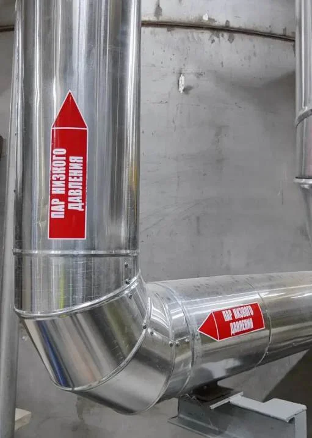
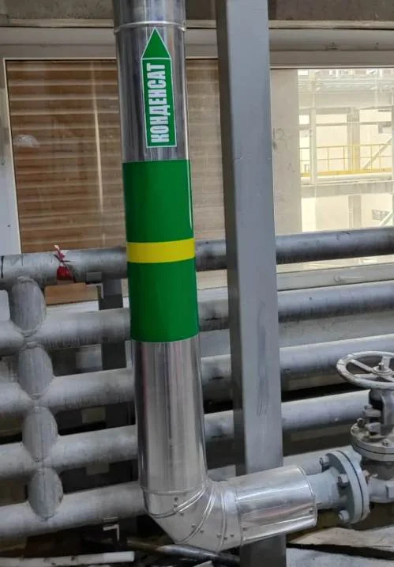
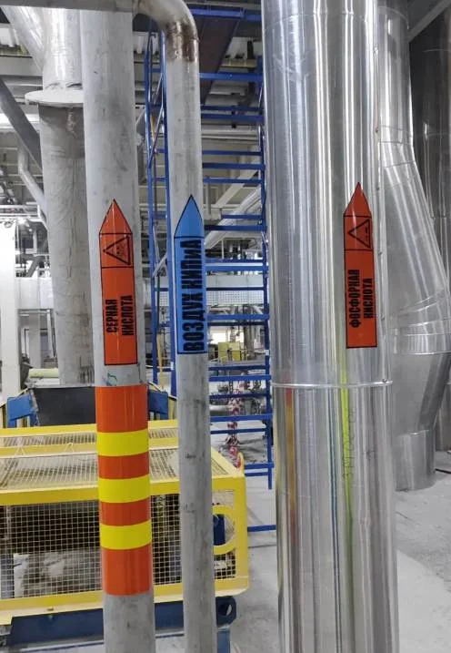
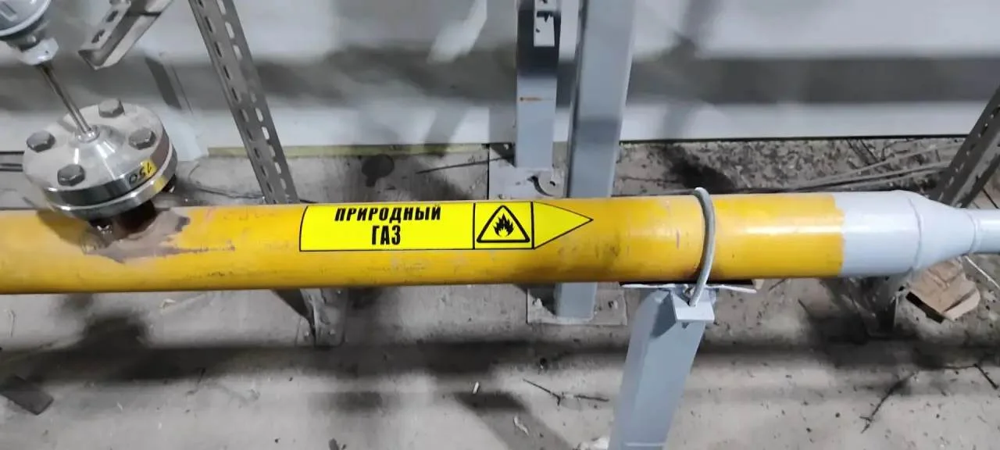
Зачем нужна маркировка
НадёжностьМаркировка обеспечивает безопасность персонала при эксплуатации трубопроводов, транспортирующих опасные вещества.
ВыгодаПравильная идентификация трубопроводов упрощает поиск и устранение повреждений, снижая сроки ремонта и простоя технологического оборудования.
ОперативностьМаркировка облегчает обслуживание и управление производственными процессами, упрощает понимание схемы инженерных коммуникаций новым и внештатным персоналом.
ЧитаемостьКачественная маркировка придаёт более читаемый вид промышленному объекту.
Готовые решения: самоклеющиеся маркеры
Самоклеющиеся полимерные маркеры в виде стрелок обладают высокой стойкостью к воздействию агрессивных сред.
Закруглённые стрелки обеспечивают прочное приклеивание маркера на концах.
На легковоспламеняющиеся, взрывоопасные, ядовитые, едкие и коррозионные, радиоактивные, окисляющие, вредные и аллергические вещества наносятся соответствующие знаки опасности.
Форма, размеры маркера, цвет, шрифт, высота букв и предупреждающие знаки опасности выполнены в соответствии с ГОСТ.
Высококачественные материалы, используемые при производстве маркеров, обеспечивают длительные сроки эксплуатации маркировки.
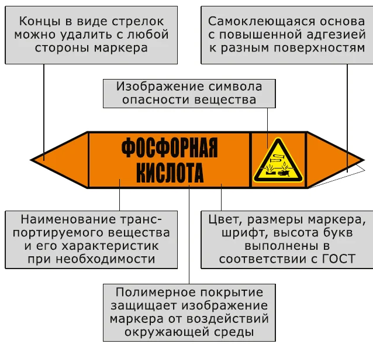
Варианты размеров и исполнений маркеров по ГОСТ 14202-69
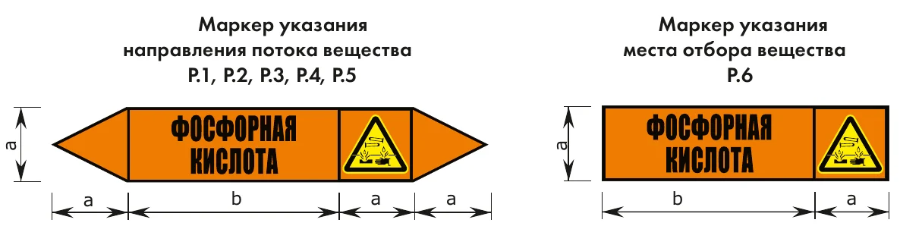
| Размер | a, мм | b, мм |
|---|---|---|
| Р.1 | 26 | 74 |
| Р.2 | 52 | 148 |
| Р.3 | 74 | 210 |
| Р.4 | 105 | 297 |
| Р.5 | 148 | 420 |
| Р.6 | 52 | 105 |
Маркировочные ленты
Самоклеющиеся маркировочные ленты — эффективное средство идентификации различных трубопроводов и воздуховодов.
Высококачественные материалы, используемые при производстве лент, обеспечивают длительные сроки эксплуатации в помещениях и на открытом воздухе.
Глянцевая водоотталкивающая поверхность лент способствует лёгкому удалению загрязнений как ручным способом, так и бесконтактными методами.
Выпускаются ленты шириной 25 мм, 50 мм, 75 мм, 100 мм.
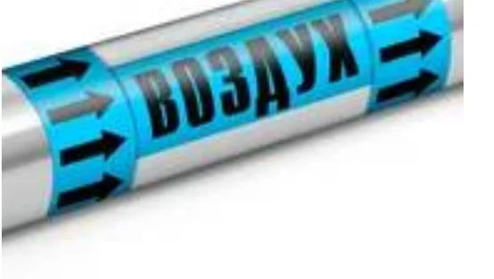
В сравнении с самоклеющимися маркерами маркировочные ленты обеспечивают большую наглядность: структура маркировки позволяет определить вид вещества и направление его транспортировки с любой стороны трубопровода.
Данный способ маркировки трубопроводов является наиболее распространённым в мире благодаря максимальной визуальной эффективности.
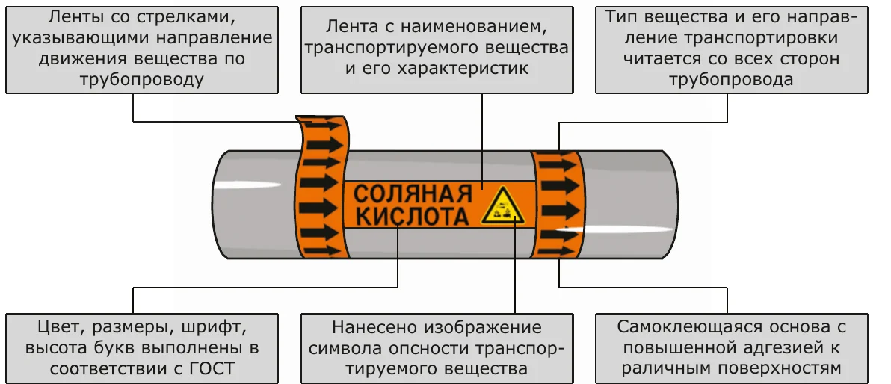
Варианты исполнений
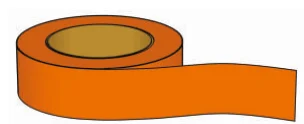
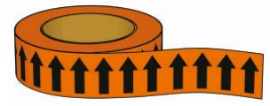
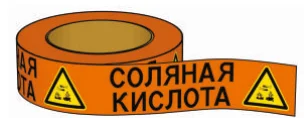
| Исполнение | PVC std | PVC uv |
|---|---|---|
| Область применения | Внутри помещений | Наружные трубопроводы |
| Материал основного слоя | Каландрированная ПВХ-плёнка | |
| Варианты цветов основы | по ГОСТ 14202-69 | |
| Цвета легенды | контрастный, по ГОСТ 14202-69 | |
| Клей | Полиакрилатный клей на водной основе, перемещаемый, с постоянной окончательной адгезией | |
| Защитное покрытие | — | Прозрачное ПВХ, толщиной 0,07 мм |
| Общая толщина | 0,08 мм | 0,15 мм |
| Термоустойчивость | от −40 °С до +80 °С | от −40 °С до +80 °С |
| Пожароустойчивость | Самозатухающий | Самозатухающий |
| Рекомендуемая температура нанесения | не менее +10 °С | не менее +10 °С |
| Срок службы | минимум 4 года | минимум 4 года |
Опознавательная окраска с предупреждающими кольцами
Применение готовых лент в качестве окраски и предупреждающих колец существенно упрощает и сокращает сроки работ по нанесению маркировки на трубопроводы.
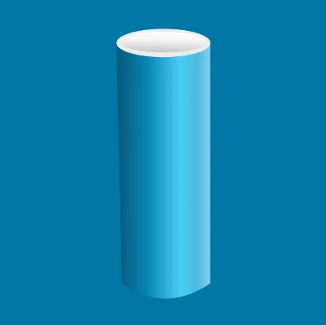
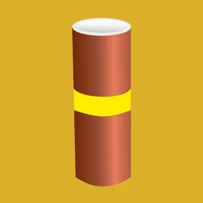
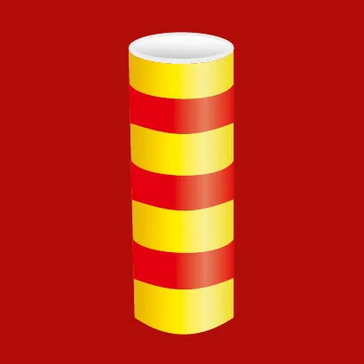
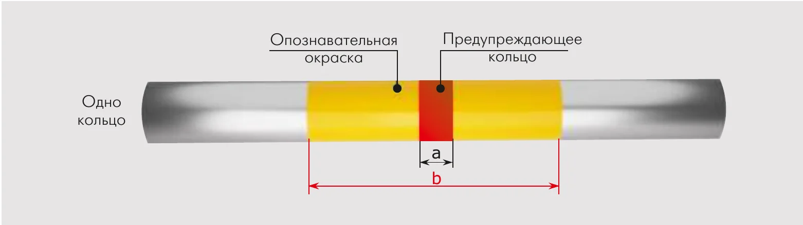
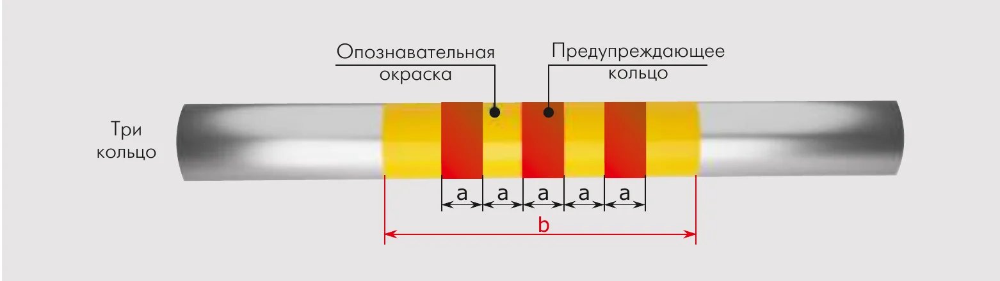
Цвет опознавательной окраски (фона)
- Зелёныйвода
- Красныйпар
- Синийвоздух
- Жёлтыйгаз
- Оранжевыйкислота
- Фиолетовыйщёлочь
- Коричневыйжидкость
- Серыйпрочие
Цвет предупреждающих колец
- Зелёныйбезопасность
- Красныйлегковоспламеняемость
- Жёлтыйопасность или вредность
Размеры колец и окраски
Опознавательная окраска (фон, b) может иметь любую ширину от 200 мм до 1200 мм. Предупреждающие кольца имеют ширину 40 мм, 50 мм, 70 мм или 100 мм.
| Наружный диаметр трубопровода, мм | Ширина предупреждающих колец a, мм |
|---|---|
| менее 80 | 40 |
| от 81 до 160 | 50 |
| от 161 до 300 | 70 |
| более 300 | 100 |
| Наружный диаметр трубопровода, мм | Ширина опознавательной окраски b, мм |
|---|---|
| менее 300 | не менее четырёх диаметров |
| более 300 | не менее двух диаметров |
Кольца с каёмкой
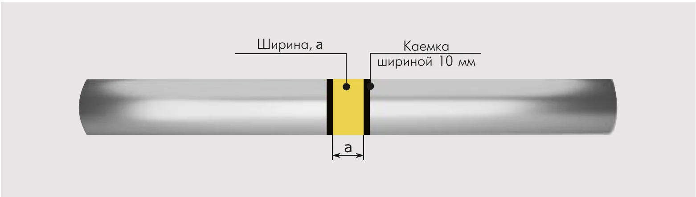
В случае совпадения цвета предупреждающего кольца и опознавательной окраски кольцо должно иметь чёрные (для жёлтого) и белые (для зелёного) каёмки. Готовое решение в этом случае — ленты в виде предупреждающего кольца с каёмками чёрного или белого цвета.
| Цвет предупреждающего кольца | Цвет каёмки |
|---|---|
| Зелёный (безопасность) | Белый |
| Жёлтый (опасность или вредность) | Чёрный |
Предупреждающие кольца (a) имеют ширину 40 мм, 50 мм, 70 мм или 100 мм. Ширина одной каёмки — 10 мм.
Нужна индивидуальная лента с кольцами других цветов и размеров? Напишите на v-s-reklama@mail.ru — уточним подробности и примем заказ.
Руководство по маркировке трубопроводов
1. Общие положения
1.1. Руководство содержит практические рекомендации по идентификации трубопроводов и воздуховодов с использованием маркировочной продукции ООО «ВС-Реклама».
1.2. Рекомендации распространяются на опознавательную маркировку наружных и внутренних трубопроводов и воздуховодов строящихся, реконструируемых, существующих промышленных и гражданских объектов с целью быстрого определения содержимого трубопроводов и облегчения управления производственными процессами, а также обеспечения безопасности труда.
1.3. Руководство не распространяется на маркировку трубопроводов и коробов с электропроводкой, а также на маркировку судовых трубопроводов.
1.4. Рекомендации разработаны в соответствии с действующими нормами по маркировке трубопроводов и воздуховодов согласно ГОСТ 14202-69 и другими разрешительными документами с учётом требований пожарной безопасности и охраны окружающей среды.
2. Опознавательная окраска трубопроводов
2.1. Опознавательная окраска трубопроводов должна выполняться с учётом требований ГОСТ 14202-69. Цвет окраски зависит от укрупнённой группы вещества, транспортируемого по трубопроводу (таблица 1).
2.2. Опознавательная окраска наносится по всей длине трубопровода или участками (см. требования ГОСТ 14202-69).
2.3. На трубопроводы, транспортирующие наиболее опасные вещества, должны быть нанесены предупреждающие кольца (см. требования ГОСТ 14202-69).
2.4. Цветовые характеристики окраски трубопроводов и предупреждающих колец должны соответствовать приложению 1 и приложению 2 ГОСТ 14202-69.
2.5. При окраске трубопроводов следует также руководствоваться отраслевыми стандартами и другими документами, утверждёнными в установленном порядке.
| Транспортируемое вещество | Цвет окраски |
|---|---|
| Вода | Зелёный |
| Пар | Красный |
| Воздух | Синий |
| Газы горючие и негорючие | Жёлтый |
| Кислоты | Оранжевый |
| Щёлочи | Фиолетовый |
| Жидкости горючие и негорючие | Коричневый |
| Прочие вещества | Серый |
3. Маркировка трубопроводов
3.1. Наряду с опознавательной окраской и предупреждающими кольцами на трубопроводы должны быть нанесены предупреждающие знаки опасности, наименование вещества, транспортируемого по трубопроводу, с указанием направления движения, а также параметры вещества при необходимости.
3.2. Форма, размеры маркировки, шрифт и высота надписи должны быть выполнены в соответствии с требованиями ГОСТ 14202-69.
3.4. Форма и размеры самоклеющихся маркеров приведены на рисунке 1 и в таблице 3.
3.5. Для указания направления потока вещества, движущегося в обоих направлениях, у маркера оставляются оба конца в виде стрелок.
3.6. Для указания направления потока вещества, движущегося в одном направлении, у маркера отрезается ненужный конец в виде стрелки.
3.7. Для указания места отбора вещества, например для КИП, используются маркеры типоразмера Р.6 (рис. 1).
| Транспортируемое вещество | Цвет надписи и фона |
|---|---|
| Вода | Белый на зелёном |
| Пар | Белый на красном |
| Воздух | Чёрный на синем |
| Газы горючие и негорючие | Чёрный на жёлтом |
| Кислоты | Чёрный на оранжевом |
| Щёлочи | Чёрный на фиолетовом |
| Жидкости горючие и негорючие | Белый на коричневом |
| Прочие вещества | Чёрный на сером |
3.8. Самоклеющиеся маркеры содержат требуемые ГОСТ предупреждающие знаки опасности необходимых размеров, поэтому наносить отдельные знаки опасности на трубопроводы при использовании маркеров не требуется.
3.9. Варианты размеров самоклеющихся маркеров следует применять преимущественно:
- Р.1 — в лабораториях;
- Р.2 и Р.3 — в производственных и вспомогательных помещениях;
- Р.4 и Р.5 — на наружных установках и наружных магистральных трассах.
3.10. При выборе размера самоклеющегося маркера следует учитывать наружный диаметр трубопровода (с учётом теплоизоляционной конструкции) и расстояние до наблюдателя (рис. 2 и табл. 4).
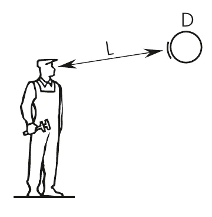
| Наружный диаметр D, мм | Расстояние до наблюдателя L, м | ||||
|---|---|---|---|---|---|
| до 6 | от 6 до 12 | от 12 до 18 | от 18 до 24 | более 24 | |
| до 80 | Р.1 | — | — | — | — |
| от 81 до 160 | Р.2 | Р.2 | Р.3 | Р.3 | Р.3 |
| от 161 до 220 | Р.3 | Р.3 | Р.3 | Р.4 | Р.4 |
| от 221 до 300 | Р.4 | Р.4 | Р.4 | Р.4 | Р.5 |
| более 300 | Р.5 | Р.5 | Р.5 | Р.5 | Р.5 |
3.11. Совместно с самоклеющимися маркерами возможно применение маркировочных щитков ГОСТ 14202-69. Щитки особенно эффективны в местах, где невозможно приклеить маркер непосредственно на трубопровод (загрязнённые, окислившиеся и замасленные поверхности).
3.12. Самоклеющиеся маркеры и маркировочные щитки на трубопроводах следует располагать в хорошо освещённых местах или подсвечивать, чтобы обеспечить их ясную видимость. При этом источники света не должны закрывать изображения и надписи, а также ослеплять персонал при наблюдении за ними.
3.13. Маркировочные щитки с наклеенными маркерами следует располагать вертикально вниз относительно трубопровода, если трубопровод проходит выше наблюдателя, и вертикально вверх, когда наблюдатель смотрит на трубопровод сверху.
3.14. Самоклеющиеся маркеры следует наклеивать на трубопровод так, чтобы маркер был максимально повёрнут в сторону наблюдателя.
3.15. При большом числе параллельно расположенных коммуникаций маркеры рекомендуется размещать по одной линии на всех трубопроводах, по возможности обеспечивая одновременную видимость всей маркировочной группы с позиции наблюдателя.
3.16. Элементы маркировки должны наноситься с учётом местных условий в наиболее ответственных пунктах коммуникаций:
- у мест разделения и объединения потоков среды (ответвлений);
- в местах изменения направления потока;
- у мест установки арматуры, соединений фланцев;
- в точках отбора и КИП;
- на вводах и выводах оборудования и установок;
- в местах прохода трубопроводов через стены, перегородки, перекрытия;
- на вводах и выводах из производственных зданий и т. п.
3.17. На трубопроводах маркировка должна наноситься не реже чем через 10 м внутри помещений и на наружных установках; через 30–60 м на наружных магистральных трассах.
3.18. Во всех производственных помещениях, где имеются трубопроводы, на хорошо доступных для обозрения местах должны вывешиваться схемы опознавательной окраски коммуникаций с расшифровкой отличительных цветов, предупреждающих знаков и цифровых обозначений, принятых для маркировки трубопроводов. Рекомендуется также схематично указать места размещения маркировочных изделий.
3.19. Перед нанесением самоклеющихся маркеров на трубопровод или теплоизоляционную конструкцию поверхность рекомендуется очистить от грязи, ржавчины, окалины. Окончательную обработку желательно проводить очистителем.
3.20. В качестве очистителя рекомендуется использовать абсолютированный изопропиловый спирт 99,7 %: он идеально совместим с маркировочной продукцией и не агрессивен к материалам трубопроводов и лакокрасочным покрытиям.
4. Эксплуатация
4.1. Для обеспечения максимального срока службы маркировочной продукции необходимо, чтобы условия применения соответствовали эксплуатационным характеристикам маркировочных изделий.
4.2. Рекомендуется производить периодические осмотры трубопроводов и воздуховодов с целью обнаружения повреждённой маркировки для её замены.
Нормативные документы
Тексты стандартов, на которые мы опираемся при изготовлении маркировки. Откройте документ в браузере или скачайте PDF.
ГОСТ 14202-69
Трубопроводы промышленных предприятий. Опознавательная окраска, предупреждающие знаки и маркировочные щитки
Заказать маркировку
Напишите на v-s-reklama@mail.ru или позвоните: (351) 771-05-11, (351) 771-05-18 — подберём маркеры и ленты под ваш объект и подготовим расчёт.